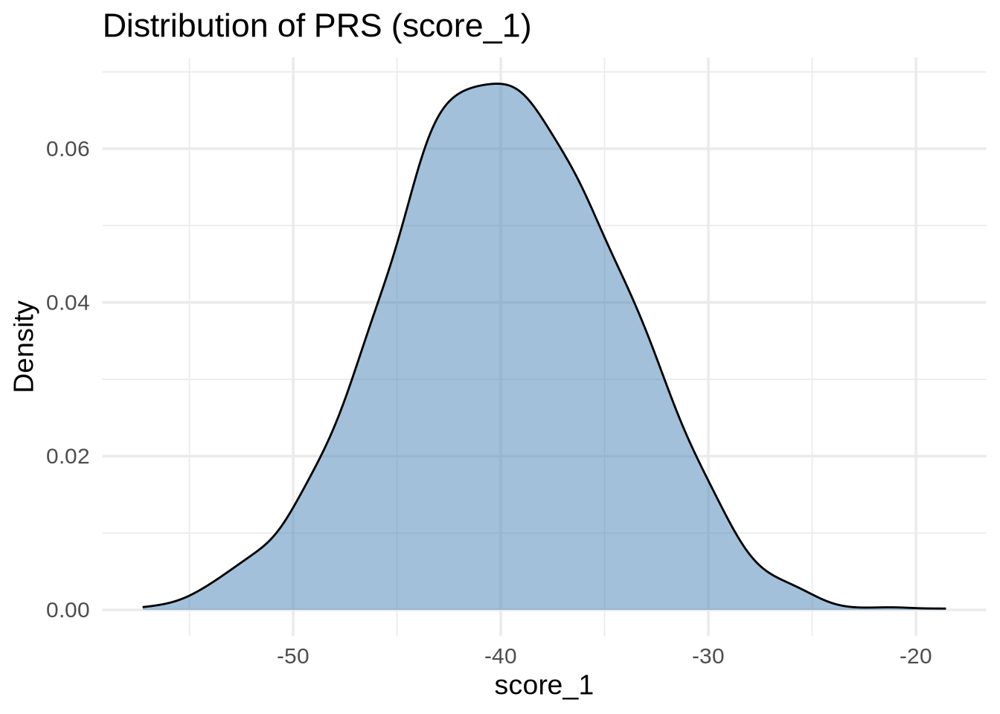
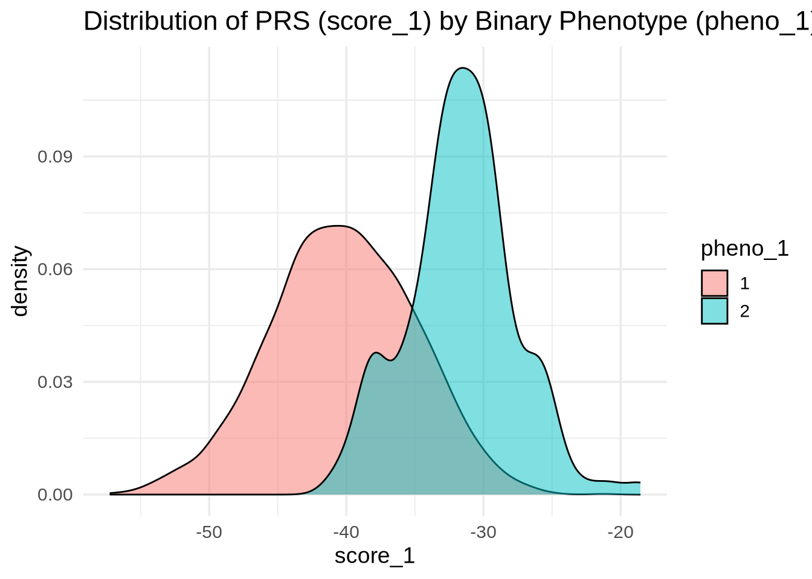
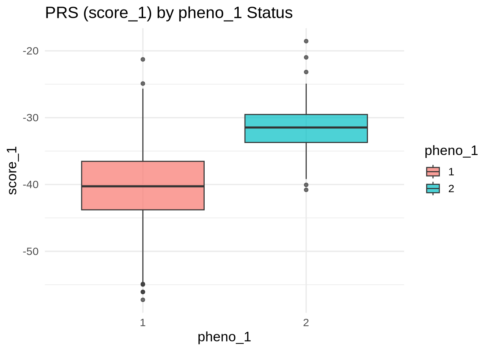
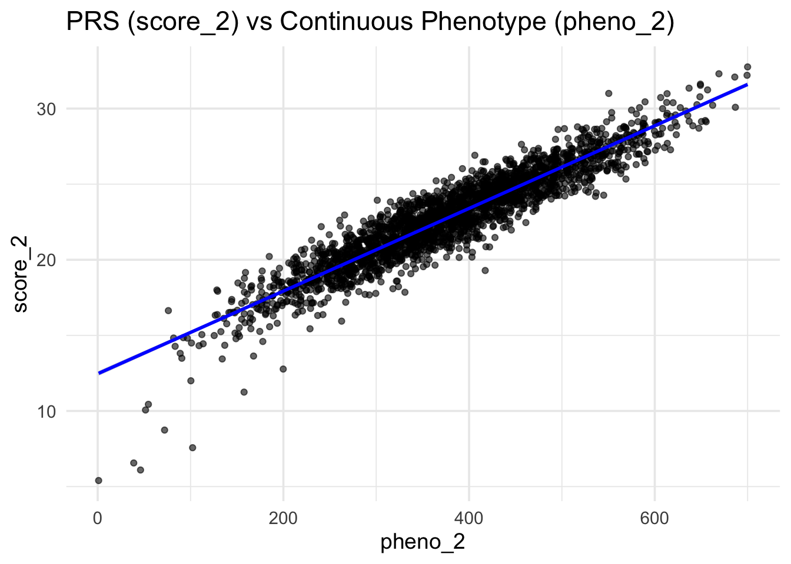
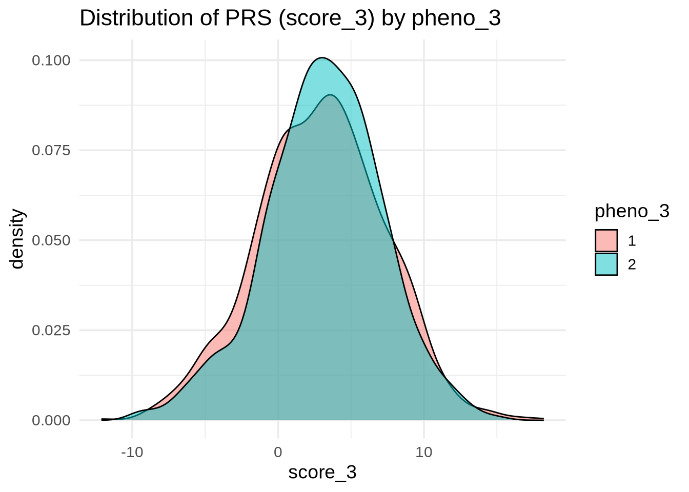
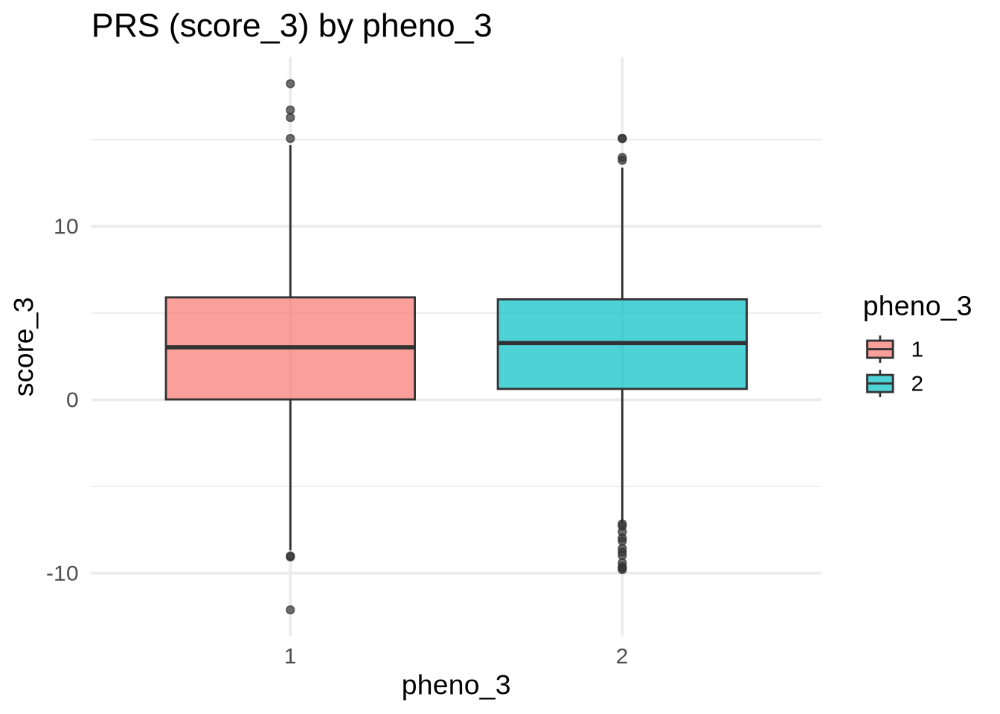
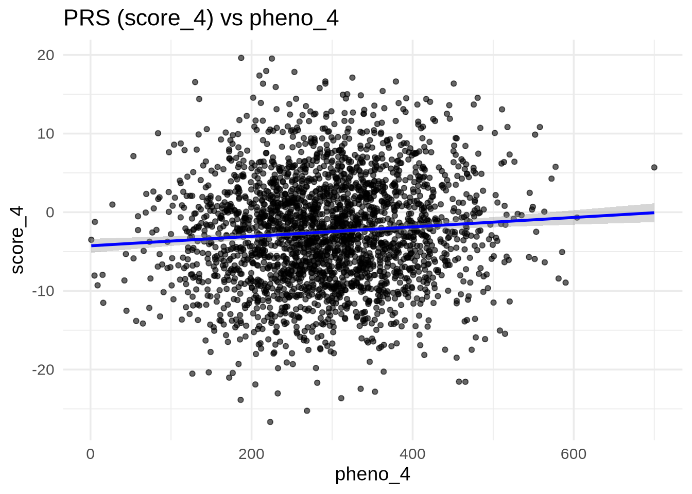

# Load necessary libraries
library(ggplot2)
library(dplyr)
library(readr)
# Set a clean theme for all plots
theme_set(theme_minimal(base_size = 14))Polygenic Risk Scores
The Michigan Imputation Server not only performs genotype imputation but also provides pre-calculated polygenic risk scores (PRS) for a wide range of traits and diseases. After imputation, users can download an additional output file — scores.txt — which includes PRS computed using models from the PGS Catalog.
Key details:
- The
scores.txtfile contains over 3,000 PRS derived from published and validated models in the PGS Catalog. - Each score represents a weighted sum of alleles associated with a particular phenotype or disease.
- These precomputed scores allow researchers to quickly explore genetic risk profiles across multiple traits without performing their own PRS calculations.
- The file can be easily merged with phenotype and covariate data for downstream statistical and visualization analyses.
Using these precomputed PRS values simplifies the workflow, enabling efficient evaluation and comparison of genetic risk predictions across numerous traits.
In this tutorial, we will:
- Load PRS and phenotype data
- Merge and explore them
- Visualize the relationship between scores and phenotypes
- Interpret how well different scores distinguish or predict traits
Setup
In this step, we prepare the R environment for data analysis and visualization. We load the required R libraries — ggplot2 for plotting, dplyr for data manipulation, and readr for fast data import. We also define a consistent, clean plotting style using the theme_minimal() theme, which will be applied to all figures throughout the tutorial.
Load Data
In this step, we import the polygenic risk score (PRS) and phenotype datasets into R and prepare them for analysis. The PRS data (scores.txt) and phenotype data (phenotypes.txt) are read from the data/ directory, and then merged by the shared sample identifier (sample / IID). This creates a single combined dataset containing both genetic scores and corresponding phenotypic information for each individual.
# Read PRS scores and phenotypes
scores <- read_csv("data/scores.txt")
phenos <- read_table("data/phenotypes.txt")
# Merge datasets by sample ID
merged <- inner_join(scores, phenos, by = c("sample" = "IID"))Exploring the Distribution of PRS Scores
It’s good practice to inspect the distribution of scores before comparing them with phenotypes.
ggplot(merged, aes(x = score_1)) +
geom_density(alpha = 0.5, fill = "steelblue") +
labs(
title = "Distribution of PRS (score_1)",
x = "score_1",
y = "Density"
)
PRS Performance for a Binary Trait (pheno_1)
pheno_1 is a binary phenotype — for example, disease status (case vs. control). We can check whether score_1 separates the two groups.
ggplot(merged, aes(x = score_1, fill = as.factor(pheno_1))) +
geom_density(alpha = 0.5) +
labs(
title = "Distribution of PRS (score_1) by Binary Phenotype (pheno_1)",
x = "score_1",
fill = "pheno_1"
)
ggplot(merged, aes(y = score_1, x = as.factor(pheno_1), fill = as.factor(pheno_1))) +
geom_boxplot(alpha = 0.7) +
labs(
title = "PRS (score_1) by pheno_1 Status",
x = "pheno_1",
y = "score_1",
fill = "pheno_1"
)
💡 Interpretation: If the distributions are well separated, score_1 effectively distinguishes between cases and controls — meaning the PRS captures meaningful genetic signal for pheno_1.
PRS and Continuous Trait (pheno_2)
pheno_2 is continuous (e.g., height, BMI). We expect a strong linear relationship between score_2 and pheno_2.
ggplot(merged, aes(x = pheno_2, y = score_2)) +
geom_point(alpha = 0.6) +
geom_smooth(method = "lm", se = TRUE, color = "blue") +
labs(
title = "PRS (score_2) vs Continuous Phenotype (pheno_2)",
x = "pheno_2",
y = "score_2"
)`geom_smooth()` using formula = 'y ~ x'
💡 Interpretation: A clear upward trend and strong correlation (tight linear fit) indicate that the PRS predicts the quantitative trait effectively.
PRS with Weak or No Association (pheno_3 and pheno_4)
pheno_3 and pheno_4 do not show strong relationships with their PRS. We’ll confirm this visually.
pheno_3 (Categorical)
ggplot(merged, aes(x = score_3, fill = as.factor(pheno_3))) +
geom_density(alpha = 0.5) +
labs(
title = "Distribution of PRS (score_3) by pheno_3",
x = "score_3",
fill = "pheno_3"
)
ggplot(merged, aes(y = score_3, x = as.factor(pheno_3), fill = as.factor(pheno_3))) +
geom_boxplot(alpha = 0.7) +
labs(
title = "PRS (score_3) by pheno_3",
x = "pheno_3",
y = "score_3",
fill = "pheno_3"
)
💡 Interpretation: If the boxplots overlap heavily, score_3 provides little discrimination for pheno_3.
pheno_4 (Continuous)
ggplot(merged, aes(x = pheno_4, y = score_4)) +
geom_point(alpha = 0.6) +
geom_smooth(method = "lm", se = TRUE, color = "blue") +
labs(
title = "PRS (score_4) vs pheno_4",
x = "pheno_4",
y = "score_4"
)`geom_smooth()` using formula = 'y ~ x'
💡 Interpretation: If the regression line is flat and the scatter is random, there’s no clear correlation — suggesting the PRS does not capture the underlying genetic variance for this trait.
Summary
| Phenotype | Type | Expected Pattern | PRS Performance |
|---|---|---|---|
| pheno_1 | Binary | Distinguishable groups | ✅ Strong separation |
| pheno_2 | Continuous | Strong positive linear correlation | ✅ Strong correlation |
| pheno_3 | Binary/Categorical | Overlapping distributions | ❌ Weak |
| pheno_4 | Continuous | Flat relationship | ❌ Weak |
Conclusion
This tutorial demonstrates how to:
- Load and merge PRS and phenotype data
- Visualize relationships between PRS and traits
- Interpret how well PRS predicts different phenotype types
Such visual checks are an essential first step before applying formal statistical tests (e.g., logistic or linear regression) to quantify the predictive power of PRS.
Next Steps:
- Perform logistic regression for binary traits (
pheno_1,pheno_3) - Perform linear regression for continuous traits (
pheno_2,pheno_4) - Compute metrics such as AUC or ( R^2 ) to assess predictive strength